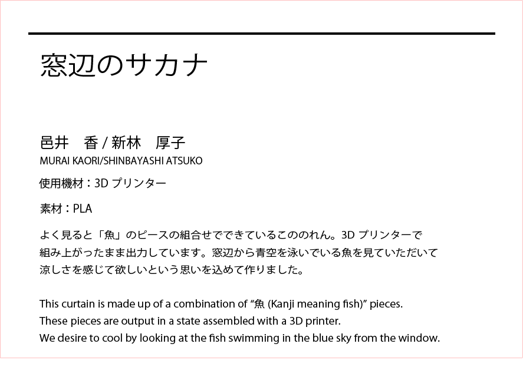
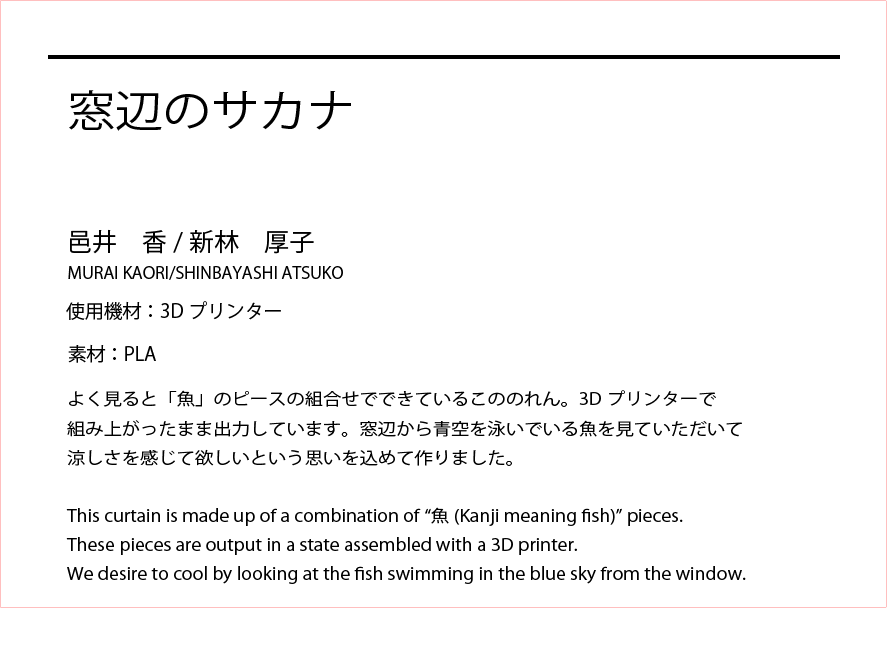
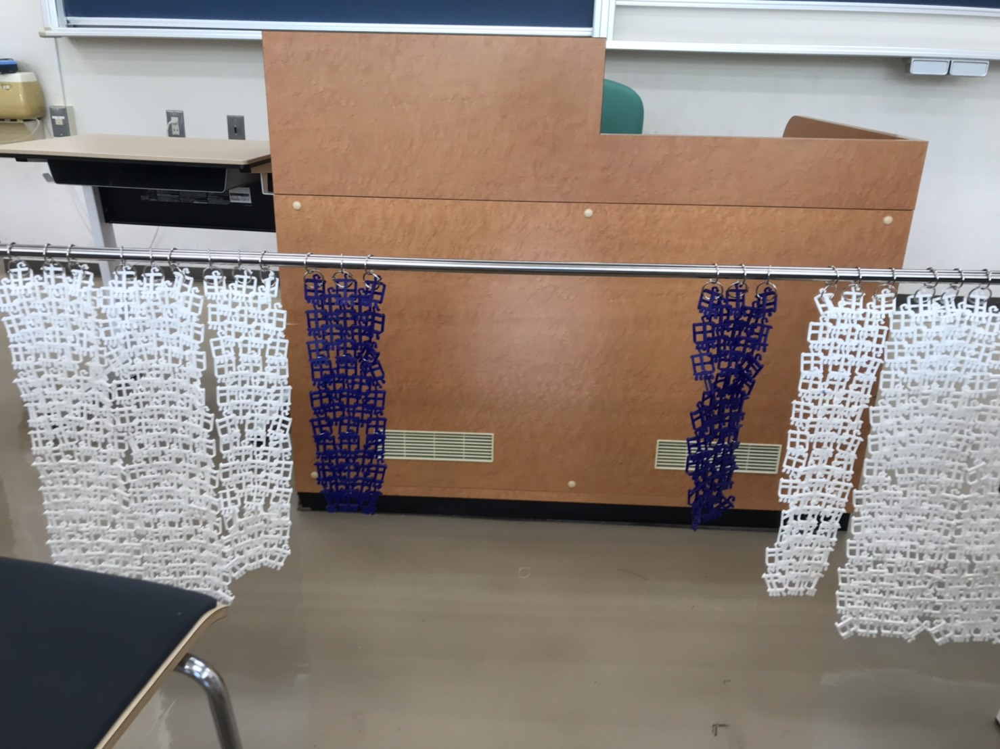

同じゼミの邑井さんのサポートとして江ノ島で開催された展示会に参加させて頂きました。
 

邑井さんによる魚のピースのデザイン
↓
最初はパラソルの案になる（ピースの量産を3Dプリンターでしつつ）
↓
いざ市販の骨組みとピースを組み立てる・・・・・・・ピースがたるみ上手く張れないためボツ案に....
↓
案の候補の１つにあった”すだれ”に案を変更
↓
市販の吊り天秤と組み合わせる・・・・・・・・・・・採用

↓
市販のカードリングと丸カンを組み合わせて横や縦の長さを調節

↓
現場にて組み立てて完成

ピースの製造している様子も展示することに

製作においては、パラソルの件であったように頭の中ではイメージ出来ていたとしても、実際に作ってみて上手くイメージ通りに出来ずやり直すことが多く、自分たちが思い描くものを形にする難しさやトライ＆エラーを繰り返す重要性を学んだ。
展示当日においては、国籍・年齢問わずたくさんの方々が観に来てくれた。最初の方は作品に見入ってるお客さんの邪魔をしてしまう気がしてなかなか話しかけるタイミングや話しかける勇気がでず苦戦したが、展示の最終日に当たるに連れて徐々に失敗の不安や恥ずかしさが薄れて話しかけることが出来た。改めてこのような場面においては失敗を恐れずにバンバン話しかけると意外と上手くいくことを実感した。
最後に、今回は邑井さんのサポートという形で参加し作品の核となるものにはあまり関わることは出来なかったが、2人であーでもないこーでもないと相談し合い１つの作品を作りあげるのは大変だったがとても楽しかった。また、一緒に参加したゼミ仲間達もそれぞれ悩み苦しんでいて、より良いものを作る大変さを改めて思い知ることが出来た。この展示会をする前はファボラボに通ったことがあまりなくデジタルファブリケーションに関する知識は皆無に近かった。しかし、この展示会を通してみんなの作品・製作過程を知り見ることで、製作者側の立場だけではなく一観覧者としての立場としても見ることが出来てとてもいい経験だった。